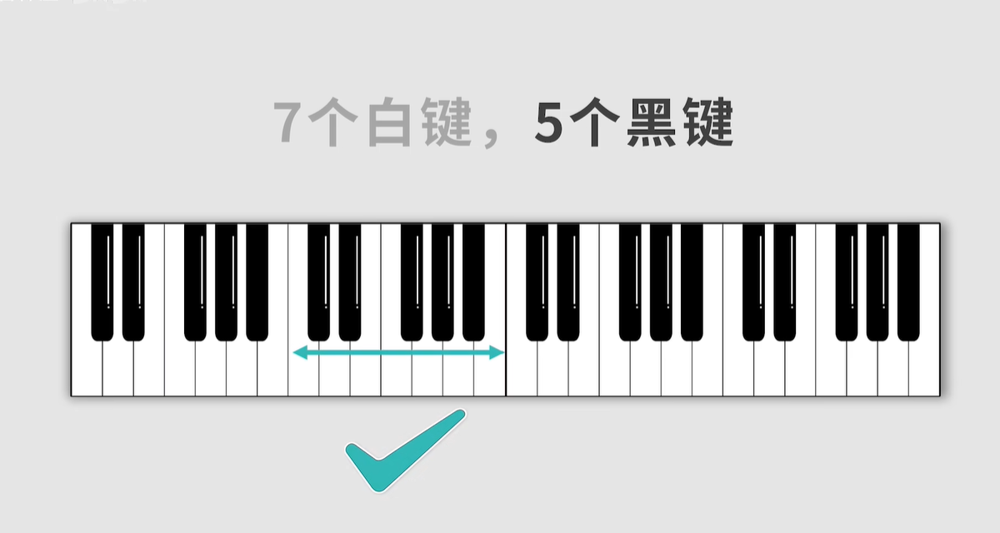
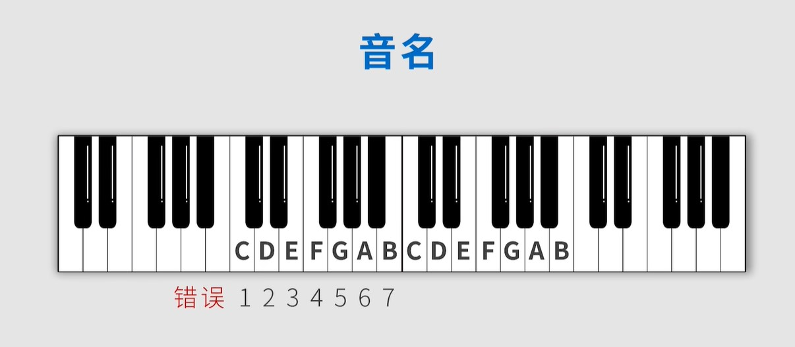

通俗易懂的乐理
通俗易懂的乐理知识
钢琴键盘
- 88键去掉左边3个，右边1个，剩下能划分成7个组，每组7个白键，5个黑键  
升降号，还原号
半音 全音 -
区别是看中间是否隔了一个键，白键中只有E和F，B和C是半音关系 
升降半调 - 比如C大调 1 2 3 4 5 6 7 i ，降半调b1 b2 b3 b4 b5 b6 b7
bi；升半调#1 #2 #3 #4 #5 #6 #7
#i，以此类推。也就是整个调的音都降半音或者升半音。  -
还原号（♮）又称还原记号、本位记号，是变音记号之一，用于还原变化音级。 -
还原C# 就是 C ，还原Db 就是 D
-
还原号（♮）又称还原记号、本位记号，是变音记号之一，用于还原变化音级。 -
还原C# 就是 C ，还原Db 就是 D
等音 
重升和重降 - 其实就是进行2次升降半调操作，就是换了个记号 
下面的键盘需熟记

音符时值
- 代表音的长短

- 附点音符
- X·
- 代表四分音符再加个四分音符的一半，也就是8分音符，最后时值是4分+8分
- X·
- 三连音
- 3个四分音符三连音就是把
## 节拍
- 3个四分音符三连音就是把
- 常见有4/4, 3/4, 2/4, 3/8, 6/8拍
算法: - 以3/4拍为例，意为以4分音符为一拍，每小节有3拍 - 四分音符为一拍，那么二分音符就是2拍，以此类推 - 歌曲是由小节组成,每小节3拍就是一个小节里的音符加起来有3拍
BPM（每分钟歌曲的速度）
算法： 60/速度 = 拍子（s） - 用途：通过节拍和速度，计算出不同条件下音符的时间 - 举个🍐 - 6/8拍 120BPM - 60/120 = 0.5s = 1拍 = 8分音符 - 通过计算可得8分音符是0.5s
本博客所有文章除特别声明外，均采用 CC BY-NC-SA 4.0 许可协议。转载请注明来自 鲷鱼烧！